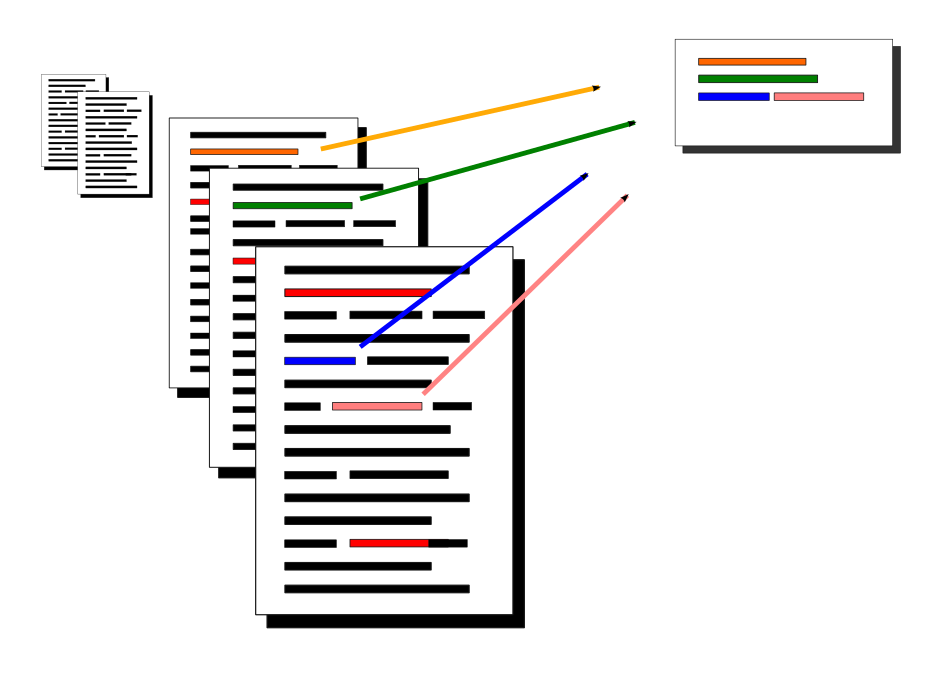

Multi-document summarization
Abstract: News reports, social media streams, blogs, digitized archives and books are part of a plethora of reading sources that people face every day. This raises the question of how to best generate automatic summaries. Many existing methods for extracting summaries rely on comparing the similarity of two sentences in some way. We present new ways of measuring this similarity, based on sentiment analysis and continuous vector space representations, and show that combining these together with similarity measures from existing methods, helps to create better summaries. The finding is demonstrated with MULTSUM, a novel summarization method that uses ideas from kernel methods to combine sentence similarity measures. Submodular optimization is then used to produce summaries that take several different similarity measures into account. Our method improves over the state-of-the-art on standard benchmark datasets; it is also fast and scale to large document collections, and the results are statistically significant.
How to use this.
We provide our MULTSUM implementation in Python (run without arguments for usage information). The package includes a demo that can be run from command line (see multsum.py), or with an included GUI application (see multsum_gui.py).
Download: MULTSUM.tar.gz.
Github repository: https://github.com/olofmogren/multsum.
- The Python code provided here includes four different similarity measures: LinTFIDF, PositiveSentiment, NegativeSentiment, and Word2Vec.
- To run experiments with the same data, the DUC datasets can be requested from http://duc.nist.gov/data.html.
- We have also evaluated on the Opinosis dataset (but it's not as prominent in the paper). It can be freely downloaded from http://kavita-ganesan.com/dataset/.
- To evaluate automatic summaries, ROUGE is the standard tool. For information, and to request a copy of the script, see http://www.berouge.com/
- To compare with other systems, Hong et.al. has published a repository of pre-computed summaries for DUC 2004. It can be downloaded from https://cis.upenn.edu/~hongkai1/.
Relevant publications
Extractive summarization by aggregating multiple similarities
RANLP 2015, Hissar, Bulgaria, September 6th-11th
Olof Mogren, Mikael Kågebäck, Devdatt Dubhashi
PDF Fulltext,
bibtex.
Extractive summarization using continuous vector space models
2nd Workshop on Continuous Vector Space Models and their Compositionality CVSC 2014, Gothenburg Sweden
Mikael Kågebäck, Olof Mogren, Nina Tahmasebi, Devdatt Dubhashi
PDF Fulltext,
bibtex.